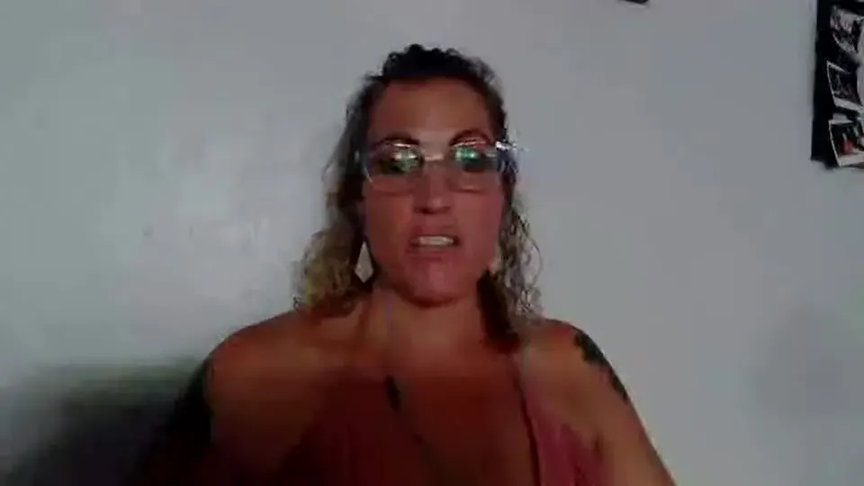

Amy
After being laid off from what she believed was her dream job, Amy felt angry, stuck and unsure what came next. Amy has shared that our work helped her turn some of her attention inward and feel more connected to herself.
“I feel like who I am, it hasn't changed. It's just I'm back home.”